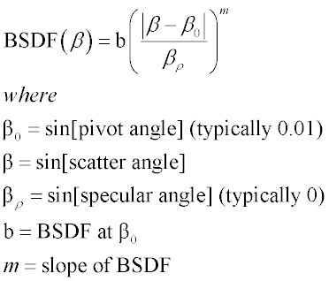

Scattering is generally defined as the removal of energy from an incident wave and the subsequent re-emission of some portion of that energy. The macroscopic laws of refraction and reflection may even be considered special cases of the statistical averages of scattering phenomena. This topic discusses scatter from nonsmooth surfaces; that is, surface scattering, since ASAP is primarily designed to model surface scattering phenomena. Volume scattering can be modeled by using many transparent scattering surfaces to partition the volume.
Scattered light is more commonly associated with the re-emission of incident energy from small particles, such as atoms or dust in the atmosphere, dust on a surface, or a nonsmooth surface finish, which is referred to as surface scattering.
Scatter may also be caused by bulk material contamination or by variations in the homogeneity of the index of refraction of the material, which is referred to as volume scattering.
Most optical software packages model surfaces as perfectly smooth, even though in reality they are not. The optical grinding and polishing processes damage the surface and subsurface of the optic.
Painted surfaces, such as those used for baffles or lens mounts, generally have rougher base surfaces than optical surfaces, since the paint is usually applied to a metal substrate.
In either case, it is the scattered energy from these surfaces that propagates to undesired places in the optical system thereby reducing system performance. You must, therefore, be able to quantify the scatter from these surfaces.
A common mechanical way to describe the roughness of a surface is by its RMS surface roughness. The RMS surface roughness may be related to the scattering properties of the surface; namely, the BSDF function. The BSDF is generally defined as the ratio of the scattered surface radiance to the incident surface irradiance. The BSDF is what ASAP requires to simulate surface scattering. Mathematically, this is a six-dimensional quantity describing how light scatters off a surface as a function of angle and position on the surface.
The surface roughness is measurable directly via profile methods.
The BSDF is a special form of what is called ARS. ARS is a product of the intrinsic surface roughness and the extrinsic measurement parameters of incident wavelength, angle of incidence, material index, polarization state, and scattering angle. The integral of ARS over all angles is the TIS. TIS is the ratio of light scattered into a hemisphere to the total incident specular light. It is related to the RMS surface roughness by the following equation:
This equation is valid between wavelengths of 0.1 to 1.15μm and only if the heights of surface irregularities are small compared to the incident wavelength (approximately 100 Angstroms, if HeNe light is used). This theory also assumes that the scattering originates solely at the top surface and is not attributable to material inhomogeneity or multilayer coatings.
ARS measurements relate the angular distribution of scattered light to the surface roughness of the optic. It is related mathematically to the TIS as:
A special form of ARS (and the one most commonly used in ASAP) is the BSDF. The BSDF has dimensions of inverse solid angle and is defined as follows:
Although there is no consistent convention for plotting BSDF, it is commonly expressed and plotted in the following format (after Harvey).
By plotting the BSDF this way, the shift invariance of the BSDF is demonstrated for optically polished surfaces. This is not the case for painted surfaces. For smooth surfaces, m is typically between -1 and -3. The BSDF is typically between 0.01 and 0.07 in the visible for 0- degree- to 20-degree angles of incidence.
The BSDF may be related to RMS surface roughness with the following equation:
This equation was derived assuming that the RMS surface roughness is much less than one wave and that most of the scatter occurs between the angles arcsin(β1) and arcsin(β2).
Often, BSDF measurements for smooth surfaces are made at a wavelength other than the operating wavelength. The BSDF at a second wavelength may be calculated from the following relation:
This equation is valid in the wavelength range of 0.4 to 0.6µm. A similar scaling law does not exist for paints.